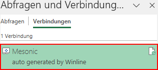
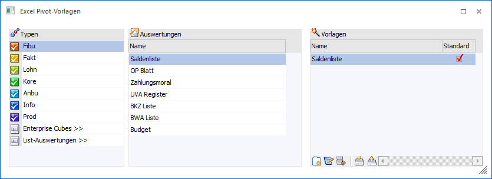
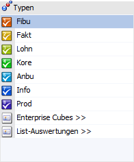
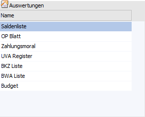
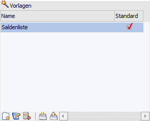
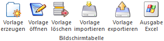

Über den Menüpunkt…
1 WinLine INFO
1 Business Intelligence
1 Excel Pivot-Vorlagen
… können für die BI-Ausgabe "Excel Pivot" vom Standard abweichende Excel-Vorlagen eingebunden und verwaltet werden.
Hinweis
Neue Excel Pivot-Vorlage sollten nach folgendem Schema erzeugt werden:
ü 1. Ausgabe
Zunächst wird die
gewünschten Auswertung in der WinLine aufgerufen und für eine schnelle und
übersichtliche Ausgabe eine Selektion durchgeführt. Anschließend wird die
Ausgabe durch Anwahl des Buttons "Excel Pivot" gestartet.
ü 2. Anpassung des Excel
Pivot-Aufbaus
In Microsoft Excel wird der Excel Pivot-Aufbau wie gewünscht
angepasst (Zeilen und Spalten verändern, neue berechnende Felder oder Grafiken
einfügen, etc.). Danach muss zwingend die von WinLine erzeugte
Datenverbindung gelöscht werden (Office 365 => "Daten - Abfrage und
Verbindungen").

Hinweis
Das Löschen ist notwendig, da die Datenverbindung von der WinLine bei jeder Excel Pivot-Ausgabe neu erstellt und an die Excel Pivot-Vorlage übergeben wird.
ü 3. Speichern und
importieren
Die angepasste Excel Pivot-Vorlage muss nun als "Excel-Vorlage"
(*.xltx) unter einem eigenen Namen gespeichert werden. Als letzter Schritt wird
das Fernster "Excel Pivot-Vorlage" in der WinLine geöffnet, die Auswertung
gewählt und die neue Vorlage mit Hilfe des Tabellenbuttons "Vorlage importieren"
importiert.

Das Fenster ist hierbei in die folgenden Bereiche untergliedert:
ü Tabelle "Typen"
ü Tabelle "Auswertungen"
ü Tabelle "Vorlagen"
Tabelle "Typen"

In der Tabelle werden entsprechenden der Programmberechtigungen die unterschiedlichen Auswertungstypen (Programmbereiche / Cubes / Listen) angezeigt. Durch Anwahl eines Typs wird die Tabelle "Auswertung" entsprechend gefüllt.
Hinweis
Bei Anwahl von "Enterprise Cube" bzw. "List-Auswertungen" wird zunächst eine Unterauswahl angezeigt, aus welcher der gewünschte Cube-Typ bzw. List-Typ gewählt werden muss.
Tabelle "Auswertungen"

In der Tabelle werden alle Auswertungen, gemäß dem zuvor gewählten Typ (siehe Tabelle "Typen"), angezeigt. Durch Anwahl einer Auswertung wird die Tabelle "Vorlagen" entsprechend gefüllt.
Tabelle "Vorlagen"

In der Tabelle werden die Excel Pivot-Vorlagen der gewählten Auswertung angezeigt. Gibt es in der Tabelle keine Hinterlegung(en), so wird von der WinLine eine Standard-Excel Pivot-Ausgabe erzeugt.
Ø Name
In dieser Spalte wird der Name der Vorlage angezeigt und kann editiert werden.
Ø Standard
Durch Anwahl dieser Checkbox wird definiert, dass es sich um die Standardvorlage handelt. Wurde eine Vorlage entsprechend gekennzeichnet, so geht bei einer Excel Pivot-Ausgabe kein Auswahlfenster auf, sondern es findet direkt aus Ausgabe (mit der Vorlage) statt.
Tabellenbuttons

Ø Vorlage erzeugen
Der Button hat im Kontext einer Excel Pivot-Vorlage keine Funktion!
Ø Vorlage öffnen
Bei Anwahl dieses Tabellenbuttons wird Microsoft Excel geöffnet und die gewählt Vorlage geladen. Die angezeigten Daten entsprechen dabei jene zum Zeitpunkt des Imports. Eine Aktualisierung der Daten oder eine Veränderungen des Excel Pivot-Aufbaus ist nicht möglich, da bei dieser Art der Ausgabe keine aktive Verbindung zur WinLine Datenbank erzeugt wird.
Ø Vorlage löschen
Mit Hilfe dieses Buttons wird die Vorlage gelöscht.
Ø Vorlage importieren
Durch Anwahl dieses Buttons kann eine neue Vorlage für die ausgewählte Auswertung in die WinLine Datenbank importiert werden. Ein Verbleib der Vorlage in Windows ist nicht notwendig.
Buttons
Ø Ok
Durch Anwahl des Buttons "Ok" bzw. der Taste F5 werden Veränderungen am Namen der Vorlage bzw. an der Checkbox "Standard" gespeichert.
Ø Ende
Bei Anwahl des Buttons "Ende" bzw. der Taste ESC wird das Fenster geschlossen und alle nicht gespeicherten Änderungen verworfen.
Ø Berechtigungen
Mit dem Button "Berechtigungen" kann das Fenster "Objekt Berechtigungen" geöffnet werden, um für die Vorlage Berechtigungen für Benutzer oder Benutzergruppen zu vergeben. Nähere Informationen zu diesem Thema finden Sie im Kapitel "Objektberechtigungen".